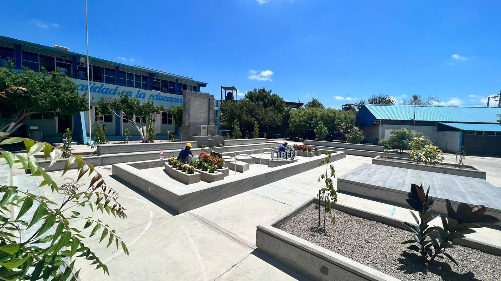
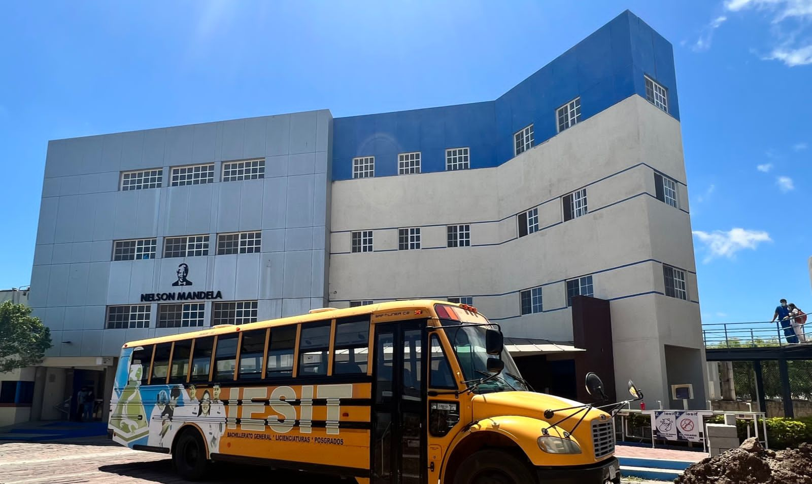

EXPLANADA ESCOLAR

EDIFICIO NELSON MANDELA
EXPLANADA ESCOLAR
EDIFICIO NELSON MANDELA
Nuestro mayor interés es que la estancia de los alumnos durante esta etapa de sus estudios sea realmente una experiencia enriquecedora, en la que además de facilitar el conocimientos, seamos apoyo para que se conviertan en ciudadanos de bien, personas respetables y productivas, que se enorgullezcan de sus orígenes y que donde quiera que vayan preserven sus tradiciones -ya que las raíces de la cultura zapoteca, son muy profundas- y a la vez estén a la altura de la competitividad de este mundo global.
Todos los que integramos la comunidad Gandhi buscamos que nuestros alumnos se interesen por el conocimiento, pero sobre todo que lo apliquen en cada uno de los actos de su vida, sin olvidar en ningún momento los valores que nos hacen crecer como seres humanos.
CAFETERIA
AUDITORIO IESIT
Para nosotros es importante que además de que nuestros alumnos realicen un brillante desempeño académico, éste se convierta en evidencia diaria en el proceso enseñanza-aprendizaje.
Sean bienvenidos y sepan que estamos aquí para ofrecer un servicio educativo de calidad. Muchas gracias.
Profr. Benigno Casique Vásquez-Director
INFORMACIÓN DE LA ESCUELA
ELABORACIÓN DE PAGINAS WEB: